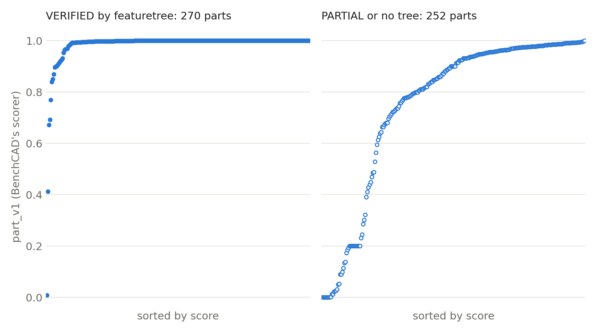

BenchCAD 2.0 is a benchmark for models that build CAD. The model gets a part drawing, rendered views, or parts and an assembly drawing, writes a CadQuery program, and is scored on the geometry that program produces. The scoring is deterministic and the code is public.
featuretree does not do any of those tasks. It starts from an exact STEP solid and recovers an editable feature tree for it. So we did what we did with the NIST parts: we gave featuretree the reference parts themselves, rebuilt each recovered tree, and scored the rebuild with BenchCAD's own part scorer. This measures how faithfully featuretree turns a finished part back into a tree. It is not a BenchCAD result and should not be compared with the leaderboard: there, the model never sees the answer, and here the answer is the input.
What we ran
BenchCAD's public set has 91 cases across its five part and assembly tasks. From those we took every STEP file that holds one part: the reference parts of the drawing and render cases, the parts a model has to model in the assembly cases, and the parts the assembly cases supply. That is 582 files. Some parts appear in more than one case; BenchCAD tags each part with a pose-independent geometry hash, and with repeats removed 522 distinct parts remain. Whole assemblies were left out: featuretree recovers one body.
The score is BenchCAD's part_v1, run unmodified in BenchCAD's own environment. It is 0.8 times a voxel overlap, corrected for what a plain box, sphere or cylinder of the same size would already get, plus 0.2 times a topology term that compares counts of pieces, through-holes and sealed voids. For the render task the pose counts, so we placed each rebuild back in the input's frame with the recogniser's own exact transform rather than searching for the best rotation. For every render part, BenchCAD's overlap in that pose tracks featuretree's own measure to within a few points, so the placement is not what costs points.
We first ran the nine sample cases in BenchCAD's repository: 71 distinct parts, median 0.989, mean 0.872. Every one of those parts turned out to be in the public set, so the results below include them.
Results

| Parts | Count | VERIFIED | Identical by BenchCAD's rule | Mean score | Median |
|---|---|---|---|---|---|
| Drawing references (T1) | 21 | 1 | 0 | 0.712 | 0.900 |
| Render references (T3) | 23 | 4 | 4 | 0.632 | 0.757 |
| Parts a model must build (T4, T5) | 178 | 94 | 66 | 0.893 | 0.993 |
| Supplied parts (T2, T5) | 300 | 171 | 89 | 0.890 | 0.994 |
| All | 522 | 270 | 159 | 0.872 | 0.991 |
350 of the 522 parts score 0.95 or more. The 270 trees featuretree marks VERIFIED have a median of 1.000 and a mean of 0.985, and 159 of them pass BenchCAD's identity rule, which treats a rebuild whose surface matches the reference to within re-meshing noise as the reference itself. The 244 PARTIAL trees have a median of 0.915: 123 of them overlap the original by 97% or more and were held back by our stricter thresholds. Eight parts got no tree. Trees have a median of 10 features and at most 340. The median part took 29 seconds.
The drawing and render references are where featuretree does worst. Only five of the 44 are VERIFIED, and they account for 10 of the 40 parts under 0.25.
What the scorer found that our checks did not
Eight of the 270 VERIFIED trees have a different number of through-holes from the part. One leaves out four holes that together change the volume by 0.16%; another has three the part does not have. featuretree's closed-body check confirms a rebuild is one closed solid with no sealed voids, but it does not count through-holes. BenchCAD's topology term does. We saw one such tree in the sample run; on the full set it is eight, which is 3% of what we call VERIFIED. Counting through-holes is a small addition to the same check, and it would have made all eight PARTIAL.
The failures
40 parts score under 0.25. featuretree marks 39 of them PARTIAL or produced no tree for them, so they would not have been passed off as a correct tree. The one VERIFIED part among them is the four-missing-holes tree above.
- Eight parts got no tree: six did not finish within the 25-minute limit, and the recogniser rejected two as neither an extrusion nor a body of revolution.
- Six files hold more than one solid. featuretree recovers the largest and says so, and the score is against the whole file.
- Three are coil springs. A helix is not a stack of extrudes and revolves.
- Four overlap the original by 94% or more and still score 0.2 or less, because a plain cylinder of the same size overlaps it just as well, so the corrected overlap term is zero. That is the scorer's chance correction working as designed on near-cylindrical parts. One of the four is the VERIFIED tree with missing holes, which loses the topology term as well. The same correction takes points off several VERIFIED trees higher up the chart.
- The other 19 are trees that capture only part of the shape: freeform and spline faces, cones and cylinders on several axes, and features the layered recogniser splits into separate pieces. Seven of the 19 are drawing or render references. We have not yet gone through each one.
What this does not show
- It is not a BenchCAD score. featuretree was given the reference geometry, which no entry on the leaderboard gets.
- The 100-case Core set is available under a separate agreement. We have not run it.
- One run, with the build123d backend only. Nothing was opened in a CAD program.
- BenchCAD's terms allow publishing results but not the cases, so we do not republish any part or pictures of one.
What's next
Counting through-holes in the closed-body check, then rerunning the eight. A look at the 19 partial recoveries above. Parts with freeform faces and helices, which are still out of reach of a tree of extrudes and revolves.
Who did what
We asked for featuretree to be tested against BenchCAD 2.0. Claude set up the scorer, ran the recoveries and wrote this post. BenchCAD 2.0, its cases and its scorer are the work of its authors.
featuretree is at punkfab/featuretree. Got a STEP file that should be an editable model? Start a project →